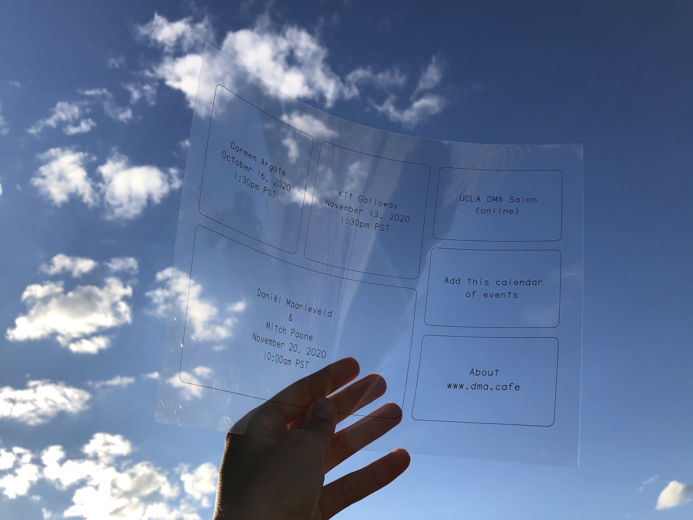
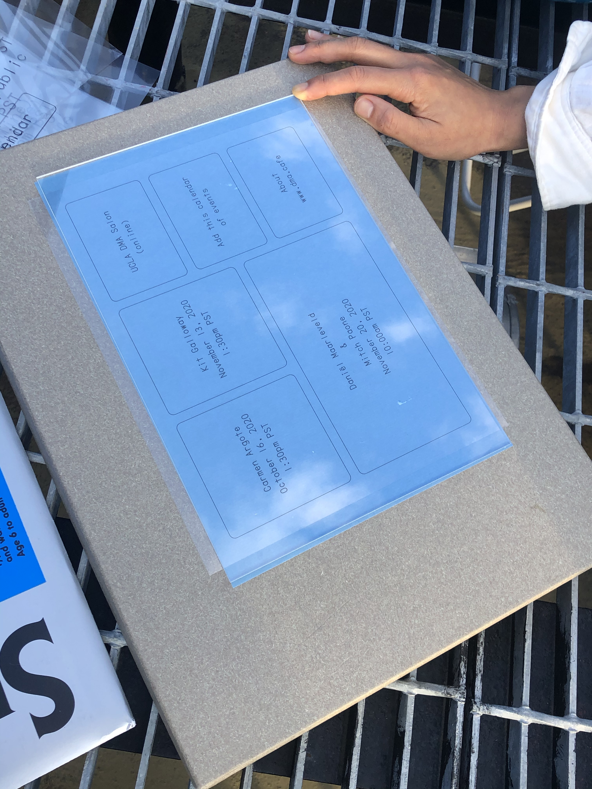

, November 20, 2020 @ 10:00am PST, free & open to the public — this information for a virtual lecture is presented as a blue and white cyanotype (sun print)")





Each page of this website, www.dma.cafe, is printed by the sun. For each event of the 2021–21 UCLA Digital Media Arts Salon lecture series, we created a cyanotype (sun print), which prints differently depending on the time of day, year, and longitudinal coordinate. As new events are added to the Salon series, new cyanotypes will be created over the course of the seasons. This website is designed and developed by us, CSS (Laura Coombs, Laurel Schwulst, Mindy Seu), and the typeface is Waxwing by Michelle Lin (UCLA DMA ’13).